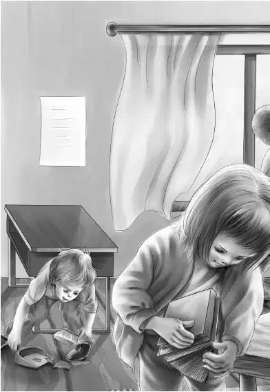
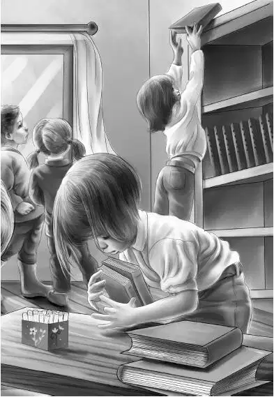

Chapter 5 The Money Man
一家人开车回到了小岛上，孩子们看到梅里和豪尔正在海滩朝他们挥手。
“过来一下好吗？”梅里大声喊道。
“你们去吧。”爷爷说道，“我就不过去了。”
四个孩子朝海滩跑了过去。
“猜猜谁要到岛上来！”豪尔叫道，“是钱贩子！”
“钱贩子？”班尼问道，“钱贩子是谁？”
“噢，他这个人可好了，专门花钱买硬币。我爸有枚25分币，钱贩子给了他十美元呢。”梅里说。
“哇噢！这么多钱！”班尼叫道，“你们怎么知道他又来了？”
“有人在北港看见他了，然后告诉了芬顿先生。”豪尔说道。
“他是不是留着黄头发？”班尼问道。
“没错，牙齿也很白。”豪尔说，“他逢人就笑，笑得可爽朗了。”
亨利点了点头，“听到了吧，杰西？”
“嗯，芬顿先生说得没错。”杰西答道，“这人咱们迟早会见到的。”
这时，梅里插了进来：“我爸说，我们得帮着打扫教室才行，毕竟是我们要用。两个大男孩可以帮着提水，至于那些小朋友，如果需要，他们也可以帮忙。”
“好极了！”亨利说，“让我想想。嗯，咱们的确需要人手，不过今天太晚了，那就明天早上开始打扫，后天早上——也就是星期四开始上课吧！”
“星期四开学可有点怪。”班尼说，“不过无所谓啦，反正油彩和教学用品都在北港买好了。”
“那就明早八点学校见好了。”杰西说，“咱们有八个人，可以做好多事情呢。”
第二天一早，奥登家的孩子们赶到了学校。豪尔和梅里正在等着他们，一同来的，还有好多没见过的孩子，加在一起远不止八个人。
亨利开了前门，所有人都走了进去，四处打量起来。


“到处都是灰！”梅里感叹道。
这是一间老式的教室，桌椅都被固定在地板上。
“我想让我的学生坐在前排。”班尼说，“你们的学生大一些，可以坐在后面。”
这的确是唯一可行的办法。因为前排的椅子很小，后排的椅子则大些。
亨利带领大家动手干活了。孩子们拿下书本，擦洗了书架，掸了掸书上的灰，然后放了回去。每个人都干得非常起劲儿。年龄最大的男孩负责擦桌子，拖地板。讲桌也被擦洗了一遍，一本崭新的粉色笔记簿被端端正正地放在正中央。
“明天谁能带些花过来，摆在这张桌子上？”杰西问道。
“我可以。”一个名叫伊莎贝的孩子叫道，“我们家的房顶上种了好大一片粉玫瑰。”
教室后面放着一个柴炉和柴火箱。豪尔擦了擦炉子，问道：“这个柴火箱怎么办？放在这儿倒也不碍事。”
“把上面擦一擦就行。”亨利说，“现在用不着生火，就放在那儿，留着冬天再用。”
少顷，班尼突然定住了，他目不转睛地注视着墙上的巨幅油画，那幅画正挂在教室前方的烟囱上。
“看啊！是乔治·华盛顿的画像，他戴着白色的假发，扎着头绳。这画该怎么办？看起来乌糟糟的，好脏！”
这是美国第一任总统的画像，画中人穿着旧式的礼服，站在一张桌子旁。
“画可没法清洗，班尼。”维莉说，“要是用水的话，会把画弄坏的。再说，这画也挂得太高了。”
“那就不管它好了。”班尼说，“真庆幸咱们这个年代不用穿那么花哨的衣服，不然还要系那么多扣子。”
“我也这样想呢。”吉米说，“班尼老师，我现在得回家去了。”
“别叫我老师啊，我还算不上呢！回家做什么？”
“我要去鱼仓里找几个旧瓶子。”吉米说，“钱贩子想要呢。我得把所有瓶子都准备好才行。”
“可不是么。”男孩的姐姐附和道，“我家还有一个装橄榄的旧瓶子，他也想一并带走，我都找出来了——上面写着‘女王橄榄，1875’几个字。我妈说，可能是我外婆买回来的。怎么样，这家伙好笑吧？一个又旧又脏的瓶子，都快一百多年了，他竟然还想要。”但很快，女孩又补充了一句，“不过他这样做也挺好的。”
所有孩子都凑到跟前，边听边点头，一个叫杰夫瑞的大男孩说：“我爸妈就等着钱贩子来呢。他让我爸妈尽量把所有旧东西都找出来，他喜欢得不得了！我妈找到一个很旧的玻璃壶，还有一颗鲸齿——上面还有图画呢！”
“杰夫瑞，你知道那颗鲸齿是哪儿来的吗？”亨利问道。
“当然知道。上面的图画就是我叔祖父画上去的，当年他经常驾驶一艘捕鲸船出海。那颗鲸齿可沉了，重到你们都难以相信。”
“好啦，咱们的任务已经完成了。”杰西说，“现在大家可以回家了，明天正式开始上课！”
“几点开始呢？”杰夫瑞问道。
“九点。”亨利回答，“你们会听到钟声的。”
“我负责敲钟。”班尼说。
“那一定很好玩！”吉米说。
“以后也可以让你敲。”班尼说，“顺便告诉其他人一声，好吗？”
“其他人？”梅里哈哈大笑起来，“大部分孩子都在这儿啦！至于剩下的那些，等我们回家，他们也就知道了。”
“下午不上课吗？”杰夫瑞问道。
“是的，很抱歉。”班尼说，“因为你们得回家做家务啦！”
“没错。”梅里脸上露出了笑容，“我要把我的屋子收拾得像教室一样干净，我妹妹也会帮我的，她跟我住一间房。”
果然——教室里已经变得非常干净。亨利锁了门，孩子们朝各个方向散去。
爷爷正等着孩子们吃午饭。
大家在桌旁坐了下来，亨利说道：“爷爷，那个钱贩子真是让人担心，我怕他会把全岛的人都给骗了。”
“的确是这样。”杰西说，“就因为他花十美元买了枚25分币，大家就相信他了。可谁知道呢？那个硬币或许可以卖到一百美元呢。”
“也许是一千美元！”班尼叫道，“这里的事情真的有些蹊跷，爷爷。我总觉得，那个钱贩子的人品没有看起来那么好。”
爷爷微微一笑，说道：“所以说，班尼，你要把眼睛睁大些，要是这人太过分了，咱们就要尽力阻止他。不过你说得对，这人的人品的确不怎么样！”